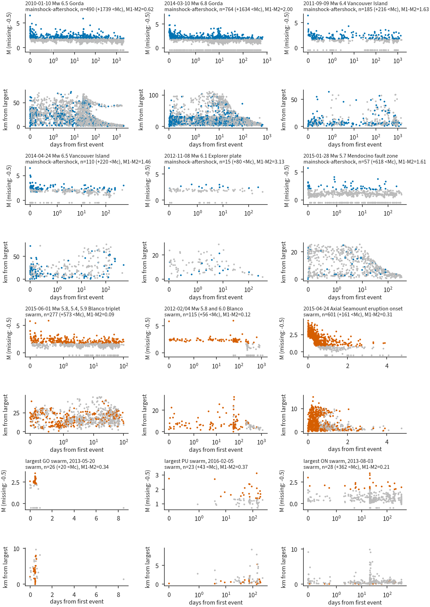
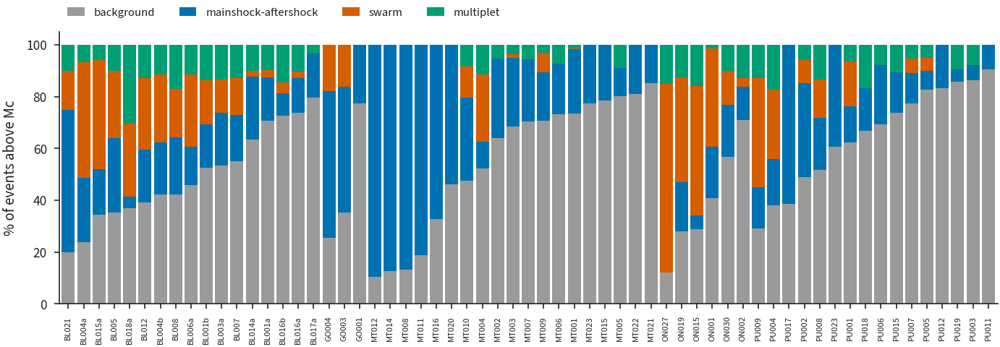

Cascadia catalog v4, 2010-2016, 172,342 events. Method of Zaliapin & Ben-Zion (2013a, 2016). Code: workflow/06_analysis/v4_clusters_zbz.py (clustering) and v4_clusters_zbz_report.py (figures, validation, this page). Branch cluster/zbz, 2026-11-22; this page built 2026-11-25.
Magnitudes of this run: /wd1/mdenolle_data/magnitude_converged/v4.1/cascadia_catalog_M_routeA_converged.csv. The tables and figures below are computed from this run. The numbers quoted in the prose were written on 2026-11-22 for the stored Route A magnitudes (data/magnitude_v4/cascadia_catalog_M_routeA.csv) and are not all updated: where prose and tables differ, the tables hold. The converged values of every number the paper quotes are in data/magnitude_converged/paper_numbers.csv (decision D-B091).
We linked every event to its nearest earlier neighbor in space, time and magnitude and cut the links at a threshold set separately in each of nine regions. Above the regional completeness magnitude Mc there are 27,423 events; 59% of them are background singles and the rest fall in 1,966 families: 913 mainshock-aftershock families, 193 swarms and 860 doublets or small multiplets. Events below Mc or without a magnitude (144,785) were attached to these families afterwards when their nearest above-Mc neighbor passed the same test; 17% of the whole catalog ends up in a family.
The main results:
| region | name | events ≥ Mc | Mc | b | log eta0 | D | D shuffled | % linked, shuffled | % background | % in MA | % in swarms | % in multiplets | MA families | MA n≥5 | swarms | multiplets |
|---|---|---|---|---|---|---|---|---|---|---|---|---|---|---|---|---|
| AX | Axial Seamount | 4004 | 0.85 | 0.77 | -5.56 | 2.32 | 0.38 | 33.10 | 51.60 | 14.20 | 25.50 | 8.70 | 184 | 24 | 37 | 141 |
| EN | Endeavour-Explorer | 421 | 2.25 | 0.84 | -4.50 | 2.86 | 0.95 | 12.50 | 52.70 | 33.50 | 7.40 | 6.40 | 12 | 3 | 4 | 9 |
| BL | Blanco transform | 9055 | 1.75 | 1.17 | -5.74 | 2.93 | 0.38 | 18.50 | 49.80 | 18.60 | 22.50 | 9.20 | 274 | 54 | 91 | 346 |
| GO | Gorda ridge and plate | 931 | 2.25 | 1.16 | -5.36 | 2.78 | 0.78 | 12.00 | 62.50 | 18.70 | 11.40 | 7.40 | 40 | 9 | 11 | 30 |
| MT | Mendocino triple junction | 4741 | 1.85 | 1.03 | -5.18 | 2.56 | 1.16 | 16.00 | 58.60 | 37.00 | 1.10 | 3.20 | 154 | 21 | 8 | 71 |
| WA | Offshore Washington | 428 | 1.65 | 1.14 | -3.40 | 1.72 | 1.28 | 2.70 | 82.50 | 9.10 | 2.80 | 5.60 | 16 | 1 | 2 | 12 |
| OR | Offshore Oregon | 318 | 1.85 | 1.22 | -3.71 | 1.74 | 1.29 | 10.10 | 66.70 | 22.00 | 1.90 | 9.40 | 11 | 2 | 1 | 13 |
| PU | Puget Lowland | 3345 | 1.35 | 1.32 | -4.29 | 1.79 | 1.27 | 5.30 | 78.70 | 11.30 | 4.20 | 5.80 | 107 | 16 | 12 | 85 |
| ON | Onshore and other | 4180 | 1.65 | 1.04 | -4.17 | 1.86 | 1.24 | 8.00 | 70.00 | 14.70 | 7.10 | 8.30 | 115 | 15 | 27 | 153 |
Percentages are of events above Mc in the region. MA = mainshock-aftershock. A family belongs to the region of its largest event; swarms are all of size 5 or more by definition. D: Ashman bimodality index of the two-Gaussian fit to log eta (D>2 means clean separation). '% linked, shuffled': share of events in time-shuffled catalogs that pass the real threshold, a false-link rate.

Families with 5 or more events above Mc at their largest event, sized by log n; grey dots are background events above Mc. Dashed boxes: regions.
Catalog and magnitudes. Catalog v4 (172,340 events) with the Route-A magnitudes
(ML calibrated to ComCat; Mw from moment tensors above 4.5). The catalog's own magnitude column is not used
because it is biased high offshore. 41,573 events (24%) have no magnitude. They are mostly small and poorly
recorded. They are left out of the clustering and attached afterwards (see below); the variant
noM_floor gives them M = Mc instead.
Regions. The nine project boxes, most specific first (AX, MT, PU, EN, BL, GO, WA, OR; ON for the rest). ON is mixed: it holds the onshore crust and slab, the Cascade volcanoes, northern Vancouver Island and the Juan de Fuca Ridge segments between the Blanco and Axial and between Axial and Endeavour. Mc, b and the threshold are regional. The parent search runs over the whole catalog, but a parent from another region is allowed only within the distance cap below; that keeps the 2014 Vancouver Island aftershocks (69 of 97 in the EN box) in one family.
Completeness. Mc by maximum curvature + 0.2 for each region and year with at least 200 events; the region Mc is the largest yearly value, so Mc is constant over 2010-2016. The OBS years (2011-2015) reach lower magnitudes offshore, and NC/BK picks are almost absent south of 42°N in 2010-2011 and 2016, so a constant Mc throws away small events in good years to keep the catalog homogeneous. Sparse years (fewer than 200 events, e.g. Blanco 2010, 2011 and 2016) do not set Mc and are less complete than the rest. The b-value-stability Mc (Woessner & Wiemer 2005 style) is equal within 0.15 or lower than ours in every region except Axial, where it is 1.3 against 0.75; the Mc + 0.3 variant partly covers that case. Variants: Mc + 0.3, and Mc per region and year.
| region | events | with M | Mc (all years) | Mc (b-stability) | Mc used | years setting Mc | events ≥ Mc | b | b error | D2 epicentres |
|---|---|---|---|---|---|---|---|---|---|---|
| AX | 26697 | 13913 | 0.75 | 0.40 | 0.85 | 2014;2015;2016 | 3996 | 0.77 | 0.01 | 0.83 |
| EN | 2439 | 1823 | 2.05 | 1.80 | 2.25 | 2012;2013;2014 | 420 | 0.84 | 0.05 | 1.16 |
| BL | 42806 | 31563 | 1.65 | 1.80 | 1.75 | 2012;2013;2014;2015 | 9034 | 1.17 | 0.01 | 1.01 |
| GO | 10123 | 6961 | 1.95 | 1.80 | 2.25 | 2010;2011;2012;2013;2014;2015 | 929 | 1.16 | 0.05 | 1.21 |
| MT | 38256 | 28750 | 1.35 | 1.50 | 1.85 | 2010;2011;2012;2013;2014;2015 | 4730 | 1.03 | 0.02 | 1.34 |
| WA | 3515 | 2828 | 1.35 | 1.30 | 1.65 | 2010;2011;2012;2013;2014;2015 | 428 | 1.14 | 0.06 | 1.42 |
| OR | 1874 | 1393 | 1.65 | 1.60 | 1.85 | 2012;2013;2014;2015;2016 | 317 | 1.22 | 0.08 | 1.06 |
| PU | 14020 | 13348 | 1.15 | 1.30 | 1.35 | 2010;2011;2012;2013;2014;2015;2016 | 3338 | 1.32 | 0.02 | 1.41 |
| ON | 32612 | 30190 | 1.55 | 1.30 | 1.65 | 2010;2011;2012;2013;2014;2015;2016 | 4173 | 1.04 | 0.02 | 0.87 |
Proximity. eta_ij = t_ij r_ij^df 10^(-b m_i) (Baiesi & Paczuski 2004), t in years, r in km, with rescaled time T = t 10^(-q b m_i) and distance R = r^df 10^(-(1-q) b m_i), q = 0.5 (Zaliapin et al. 2008). b is the Aki (1965) estimate above Mc of the parent's region. Distance is epicentral, floored at 0.5 km. We use 2-D distance because v4 depths are biased shallow (23.5% of events plot above the surface); 3-D distance is a variant. df = 1.6 in all regions, as in Zaliapin & Ben-Zion (2013a, 2016). The correlation dimension of the epicentres (3-30 km) is 0.8-1.4, lower than 1.6 because the offshore seismicity lies on narrow strands and the catalog is itself clustered; df 1.3, 2.0 and the regional estimate are variants.
Threshold. A two-component Gaussian mixture fitted to log10 eta in each region; eta0 is where the weighted components cross. The KDE valley gives lower (stricter) values by 0.4-1.3 log units. A third choice, used as a variant, sets eta0 so that only 5% of links in time-shuffled catalogs pass it.
Distance cap. A link that passes eta0 is kept only if r ≤ max(10 km, 3 L), with L the subsurface rupture length of the parent from Wells & Coppersmith (1994), log10 L = -2.44 + 0.59 M (18 km for M 5.5, 76 km for M 6.5). Without it, a M 6.5 parent links events 300 km away within a few days. The cap removed 513 of 9,726 sub-threshold links above Mc. It also cuts real links when epicentres are poor: three Blanco M 5.0-5.5 events within 2 h on 2010-05-07 (before the OBS deployments) are 21-38 km apart and stay separate.
Families and attachment. Kept links form trees; connected trees are families, events with no kept
link are background singles. Events below Mc or without M are then given their nearest above-Mc parent
(eta needs only the parent's magnitude) and join its family if the link passes the same threshold and cap
(roles ending in _belowMc). They do not change the family classification.
Classification. For families with 2-4 events above Mc: a multiplet (doublet, triplet) when M1-M2 < 0.3, else mainshock-aftershock. For 5 or more events we use three swarm indicators, from the topology analysis of Zaliapin & Ben-Zion (2013b, 2016) and the burst criteria of Vidale & Shearer (2006): S1, no dominant event (M1-M2 < 0.5); S2, late peak (at least 20% of the family occurs before its largest event); S3, chain-like tree (mean leaf depth ≥ 2 and fewer than half of the family are direct offspring of the largest event). A family is a swarm when at least two hold, otherwise a mainshock-aftershock family. In mainshock-aftershock families the largest event is the mainshock and the others are foreshocks or aftershocks by time; in swarms and multiplets all events take the family type as role. Migration: Spearman rank correlation and Theil-Sen slope of distance from the first 10% of events against time, for families of 10 or more; migrating when rho ≥ 0.5, p < 0.01 and the slope is positive.

Density of rescaled time T and distance R of each event's nearest neighbor, events above Mc. Blue contours: one time-shuffled catalog (80% and 95% density levels). Red: the threshold line.

The clustered mode (small T and small R) is clear in BL, EN, GO and MT (D = 2.5-3.4) and weaker in WA, OR and PU (D = 1.6-1.8), where the catalog is dominated by background and families are few. Axial is the special case. Its 4,290 events above M 0.75 sit in a 5 km wide caldera and most occur in the five months before the April 2015 eruption, when the rate rose steadily (Wilcock et al. 2016). Shuffling times keeps that rate history and that spatial density, so 34% of shuffled Axial events still pass the threshold, against 49% of real ones. At Axial the clustered/background split mostly separates the eruption-driven rate change from the rest, and should be read as such.
| region | w clustered | mu clustered | sd clustered | w background | mu background | sd background | log eta0 (mixture) | KDE valley | 5% shuffled | links below eta0 | cut by cap |
|---|---|---|---|---|---|---|---|---|---|---|---|
| AX | 0.41 | -6.40 | 0.85 | 0.59 | -4.46 | 0.82 | -5.56 | -6.40 | -6.78 | 1609 | 35 |
| EN | 0.46 | -6.65 | 1.66 | 0.54 | -2.64 | 1.09 | -4.50 | -6.65 | -5.43 | 181 | 7 |
| BL | 0.46 | -7.17 | 1.06 | 0.54 | -4.65 | 0.59 | -5.74 | -6.22 | -6.80 | 3962 | 124 |
| GO | 0.32 | -6.87 | 1.33 | 0.68 | -3.83 | 0.79 | -5.36 | -6.41 | -6.28 | 283 | 15 |
| MT | 0.41 | -6.80 | 1.39 | 0.59 | -4.10 | 0.55 | -5.18 | -6.14 | -6.24 | 1794 | 66 |
| WA | 0.20 | -4.21 | 1.70 | 0.80 | -1.99 | 0.63 | -3.40 | -4.21 | -3.81 | 67 | 22 |
| OR | 0.42 | -4.64 | 1.44 | 0.58 | -2.74 | 0.56 | -3.71 | -4.64 | -5.19 | 112 | 31 |
| PU | 0.23 | -5.10 | 1.46 | 0.77 | -3.13 | 0.53 | -4.29 | -5.10 | -4.63 | 592 | 84 |
| ON | 0.33 | -5.38 | 1.82 | 0.67 | -2.82 | 0.69 | -4.17 | -5.38 | -4.72 | 1110 | 148 |
| label | expected | region | M | role | type | n ≥ Mc | n all | M2 | t90 (days) | extent (km) | leaf depth | regions |
|---|---|---|---|---|---|---|---|---|---|---|---|---|
| 2010-01-10 Mw 6.5 Gorda | mainshock-aftershock | MT | 6.50 | mainshock | mainshock-aftershock | 490 | 2229 | 5.88 | 81.10 | 77.00 | 1.30 | MT:490 |
| 2014-03-10 Mw 6.8 Gorda | mainshock-aftershock | MT | 6.80 | mainshock | mainshock-aftershock | 764 | 2398 | 4.80 | 60.10 | 138.50 | 2.23 | MT:764 |
| 2011-09-09 Mw 6.4 Vancouver Island | mainshock-aftershock | ON | 6.41 | mainshock | mainshock-aftershock | 185 | 401 | 4.78 | 644.90 | 75.70 | 1.00 | ON:179;EN:6 |
| 2014-04-24 Mw 6.5 Vancouver Island | mainshock-aftershock | ON | 6.53 | mainshock | mainshock-aftershock | 110 | 330 | 5.07 | 90.90 | 98.70 | 1.01 | EN:71;ON:39 |
| 2012-11-08 Mw 6.1 Explorer plate | mainshock-aftershock | EN | 6.14 | mainshock | mainshock-aftershock | 15 | 95 | 3.01 | 68.20 | 28.60 | 1.08 | EN:15 |
| 2015-01-28 Mw 5.7 Mendocino fault zone | mainshock-aftershock | MT | 5.71 | mainshock | mainshock-aftershock | 57 | 675 | 4.10 | 47.80 | 37.20 | 1.12 | MT:57 |
| 2015-06-01 Mw 5.8, 5.4, 5.9 Blanco triplet | swarm or multiplet | BL | 5.80 | swarm | swarm | 277 | 850 | 5.80 | 48.40 | 56.20 | 1.66 | BL:276;ON:1 |
| 2012-02/04 Mw 5.8 and 6.0 Blanco | swarm or multiplet | BL | 5.95 | swarm | swarm | 115 | 171 | 5.83 | 103.30 | 41.60 | 1.55 | BL:115 |
| 2015-04-24 Axial Seamount eruption onset | swarm | AX | 4.53 | largest event | swarm | 601 | 762 | 4.22 | 1.10 | 15.40 | 16.77 | AX:601 |
The six tectonic mainshocks are all mainshock-aftershock families with the mainshock first (no foreshock above Mc except two for the 2014 Gorda event) and bushy trees (mean leaf depth 1.0-1.3), except the 2014 Mw 6.8 Gorda sequence, whose tree is deeper (3.2) because of secondary sequences inside it. The 2010 Mw 6.5 family includes the 2010-02-04 Mw 5.9 event 44 km to the south, which we count as triggered. Both Gorda families keep linking small events for years (the 2010 family's last event is in 2016), but 90% of their events come within 81-104 days. The Blanco events behave differently (next sections). The Axial eruption family starts at 05:11 UTC on 24 April 2015, has 632 events above Mc (805 in all), 90% of them within 1.2 days, and a mean leaf depth of 24: a long chain, the shape of a migrating or steadily driven swarm. It holds 61% of all Axial events above Mc between 23 April and 31 May 2015.

Magnitude and distance from the largest event against time for the validation families and the largest swarms in GO, PU, ON and BL. Colored: events above Mc; grey: attached events below Mc (missing M plotted at -0.5).
Three catalogs with event times permuted among the events of each region (locations and magnitudes kept). The two modes disappear (D shuffled in the region table: 0.3-1.6, against 1.6-3.4 for the real catalog), and the share of events that pass the real threshold and cap drops to 3-17% outside Axial (34% at Axial). In BL, GO and MT the real clustered share is 2.5-5 times the shuffled one; in WA, OR, PU and ON, 2.5-6 times, on smaller clustered shares.
| region | share below eta0 | share linked (eta0 and cap) | D | mu 1 | mu 2 |
|---|---|---|---|---|---|
| AX | 0.349 | 0.331 | 0.384 | -5.226 | -4.682 |
| EN | 0.204 | 0.125 | 0.954 | -3.844 | -2.890 |
| BL | 0.257 | 0.185 | 0.382 | -5.393 | -5.044 |
| GO | 0.177 | 0.120 | 0.779 | -5.069 | -4.276 |
| MT | 0.238 | 0.160 | 1.160 | -5.312 | -4.286 |
| WA | 0.096 | 0.027 | 1.278 | -3.320 | -2.166 |
| OR | 0.208 | 0.101 | 1.295 | -3.973 | -2.557 |
| PU | 0.100 | 0.053 | 1.272 | -3.939 | -3.101 |
| ON | 0.110 | 0.080 | 1.235 | -3.774 | -2.742 |
The earlier DBSCAN scan found 455 short clusters. Most of their events are small: only 3-36% are above the regional Mc (3% at Mount St. Helens, 11% at Mount Hood, 19% on the Blanco). Of the members that are above Mc, 85-100% are in nearest-neighbor families (Axial: 28%). The two methods agree where both can see the events. The nearest-neighbor analysis above a regional Mc cannot see the microswarms at the Cascade volcanoes; we ran a zoomed analysis for them (below).
| DBSCAN region / volcano | DBSCAN members | % above Mc | % of those in NN families |
|---|---|---|---|
| Axial Seamount | 1014 | 16.7 | 30.8 |
| Blanco transform | 11872 | 25.7 | 86.3 |
| Endeavour - Explorer | 525 | 20.2 | 98.1 |
| Gorda plate | 1186 | 14.9 | 93.2 |
| Mendocino triple junction | 3978 | 23.6 | 96.3 |
| Mount Hood | 118 | 18.6 | 100.0 |
| Mount St. Helens | 2494 | 3.2 | 91.1 |
| Offshore Oregon | 18 | 11.1 | 100.0 |
| Offshore Washington | 15 | 13.3 | 100.0 |
| Other | 511 | 29.2 | 99.3 |
| Puget Lowland | 360 | 22.8 | 98.8 |
DBSCAN 'swarm-like' flag against the type of the nearest-neighbor family that holds most of the cluster's members ('background' when none):
| main_family_type | background | mainshock-aftershock | multiplet | swarm |
|---|---|---|---|---|
| swarm_like | ||||
| False | 37 | 85 | 11 | 24 |
| True | 114 | 50 | 61 | 73 |
The DBSCAN flag and our type agree poorly: of the 298 DBSCAN swarm-like clusters, 69 sit mainly in our swarms, 54 in multiplets, 40 in mainshock-aftershock families and 135 in no family. The DBSCAN flag uses all events, including those below Mc, so its magnitude gap and largest-event position come from a different and less complete set of events.
| volcano | events ≥ Mc within 15 km | pct_background | n_families | n_swarm | n_MA | n_multiplet | largest_family_n | largest_family_type |
|---|---|---|---|---|---|---|---|---|
| Mount Baker | 3 | 100.00 | 0 | 0 | 0 | 0 | 0 | |
| Glacier Peak | 3 | 100.00 | 0 | 0 | 0 | 0 | 0 | |
| Mount Rainier | 109 | 84.40 | 7 | 0 | 3 | 4 | 4 | mainshock-aftershock |
| Mount St. Helens | 444 | 37.60 | 65 | 12 | 19 | 34 | 21 | swarm |
| Mount Adams | 1 | 100.00 | 0 | 0 | 0 | 0 | 0 | |
| Mount Hood | 61 | 37.70 | 9 | 2 | 3 | 4 | 13 | swarm |
| Mount Jefferson | 1 | 100.00 | 0 | 0 | 0 | 0 | 0 | |
| Three Sisters | 2 | 100.00 | 0 | 0 | 0 | 0 | 0 | |
| Medicine Lake | 2 | 100.00 | 0 | 0 | 0 | 0 | 0 | |
| Mount Shasta | 7 | 100.00 | 0 | 0 | 0 | 0 | 0 | |
| Lassen Peak | 16 | 37.50 | 2 | 1 | 0 | 1 | 11 | swarm |
| volcano | radius_km | events within radius | Mc_local | b_local | events ≥ local Mc | log_eta0 | ashman_D | D shuffled | pct_background | n_families | n_swarm | n_MA | n_multiplet |
|---|---|---|---|---|---|---|---|---|---|---|---|---|---|
| Mount St. Helens | 20.00 | 9727 | 0.35 | 0.79 | 3722 | -3.80 | 2.21 | 1.82 | 67.20 | 310 | 0 | 170 | 140 |
| Mount Hood | 20.00 | 356 | 1.55 | 1.39 | 79 | -3.31 | 2.40 | 1.38 | 17.70 | 9 | 0 | 4 | 5 |
| Mount Rainier | 20.00 | 1132 | 1.05 | 1.31 | 346 | -4.64 | 2.58 | 1.62 | 83.20 | 23 | 0 | 13 | 10 |
With a local Mc (0.35 at St. Helens, 1.45 at Hood, 1.05 at Rainier, within 20 km) the method finds 308 families at Mount St. Helens and 13 at Mount Hood, but the test is weak: a shuffled catalog in such a small volume is almost as bimodal (D 1.9-2.0 against 2.2-2.3). None of the volcano families meets two swarm indicators. They are small bursts of near-equal events (the largest at St. Helens: 181 events above M 0.35 from 2011-01-27, M 3.9 then M 3.1). We do not claim a swarm/burst distinction at the volcanoes from this catalog; it needs relocated, lower-Mc data (e.g. waveform-based detection, Skoumal et al. 2016).

% background above Mc by variant:
| variant | region | d3 | df1.3 | df2.0 | df_est | eta0_shuf5 | main | mc+0.3 | mc_year | noM_floor |
|---|---|---|---|---|---|---|---|---|---|---|
| AX | 62.0 | 48.9 | 57.9 | 48.6 | 81.1 | 51.6 | 48.3 | 54.4 | 36.1 | |
| EN | 70.1 | 54.9 | 54.6 | 59.9 | 62.0 | 52.7 | 55.9 | 46.9 | 42.2 | |
| BL | 55.9 | 49.5 | 50.7 | 49.9 | 64.7 | 49.8 | 50.4 | 48.4 | 58.4 | |
| GO | 67.7 | 63.9 | 64.0 | 64.1 | 71.6 | 62.5 | 66.8 | 57.7 | 65.0 | |
| MT | 60.8 | 58.9 | 58.4 | 58.9 | 69.9 | 58.6 | 61.9 | 65.1 | 69.5 | |
| WA | 85.7 | 84.1 | 81.3 | 83.2 | 85.0 | 82.5 | 88.0 | 82.9 | 87.7 | |
| OR | 77.4 | 71.1 | 60.7 | 71.7 | 84.3 | 66.7 | 66.4 | 68.8 | 72.3 | |
| PU | 81.5 | 81.6 | 76.5 | 80.6 | 82.0 | 78.7 | 81.9 | 78.9 | 80.0 | |
| ON | 71.4 | 71.8 | 68.7 | 72.7 | 75.8 | 70.0 | 69.0 | 73.0 | 70.5 |
Share of events (in both runs) with the same background/clustered label as the main run:
| variant | region | d3 | df1.3 | df2.0 | df_est | eta0_shuf5 | mc+0.3 | mc_year | noM_floor |
|---|---|---|---|---|---|---|---|---|---|
| AX | 0.894 | 0.962 | 0.934 | 0.954 | 0.706 | 0.933 | 0.967 | 0.709 | |
| EN | 0.827 | 0.979 | 0.981 | 0.929 | 0.907 | 0.939 | 0.938 | 0.865 | |
| BL | 0.880 | 0.984 | 0.977 | 0.978 | 0.851 | 0.935 | 0.980 | 0.930 | |
| GO | 0.901 | 0.982 | 0.981 | 0.977 | 0.909 | 0.891 | 0.922 | 0.914 | |
| MT | 0.960 | 0.976 | 0.970 | 0.980 | 0.888 | 0.946 | 0.947 | 0.964 | |
| WA | 0.967 | 0.984 | 0.988 | 0.993 | 0.974 | 0.937 | 0.958 | 0.960 | |
| OR | 0.893 | 0.956 | 0.940 | 0.950 | 0.824 | 0.888 | 0.990 | 0.931 | |
| PU | 0.963 | 0.970 | 0.977 | 0.981 | 0.967 | 0.913 | 0.981 | 0.995 | |
| ON | 0.934 | 0.973 | 0.972 | 0.962 | 0.941 | 0.945 | 0.975 | 0.979 |
Number of swarms by variant:
| variant | region | d3 | df1.3 | df2.0 | df_est | eta0_shuf5 | main | mc+0.3 | mc_year | noM_floor |
|---|---|---|---|---|---|---|---|---|---|---|
| AX | 26 | 39 | 28 | 44 | 13 | 37 | 21 | 43 | 332 | |
| EN | 0 | 4 | 4 | 1 | 2 | 4 | 1 | 4 | 12 | |
| BL | 90 | 84 | 96 | 83 | 44 | 91 | 36 | 105 | 145 | |
| GO | 11 | 10 | 10 | 10 | 9 | 11 | 4 | 18 | 28 | |
| MT | 6 | 5 | 13 | 5 | 3 | 8 | 3 | 17 | 23 | |
| WA | 1 | 1 | 2 | 2 | 1 | 2 | 0 | 5 | 2 | |
| OR | 1 | 1 | 1 | 1 | 0 | 1 | 0 | 0 | 4 | |
| PU | 10 | 9 | 14 | 12 | 10 | 12 | 7 | 15 | 13 | |
| ON | 27 | 24 | 35 | 25 | 23 | 27 | 12 | 38 | 50 |
Changing df, using 3-D distance or yearly Mc moves the background share by a few points
(3-D distance raises it by 2-16 points, most offshore Oregon and at Axial: v4 depths scatter more than
epicentres). Raising Mc by
0.3 halves the number of families of 5 or more, as expected, but leaves the background share within 6
points. The conservative threshold (5% shuffled links) is the largest change. Under it the Blanco, Endeavour and
Gorda plate (63-67% background) stay below offshore Washington, offshore Oregon and Puget (82-85%), while
Axial moves to 82%. Giving the events without
magnitude M = Mc (noM_floor) adds 12,800 events at Axial, most of them in the eruption period,
and turns 300 more Axial families into swarms; this variant overstates their size and is only a bound.

| region | families n≥5 | % swarms (n≥5) | median leaf depth (n≥5) | events Mc+1 to Mc+2 | mean offspring ≥ Mc | % with no offspring | events ≥ Mc+1 | % of those single | % MA families with foreshocks | % migrating (n≥10) | families n≥10 |
|---|---|---|---|---|---|---|---|---|---|---|---|
| AX | 61 | 60.70 | 2.60 | 558 | 0.83 | 52.00 | 712 | 21.10 | 34.20 | 9.50 | 21 |
| EN | 7 | 57.10 | 2.00 | 33 | 0.42 | 72.70 | 51 | 45.10 | 25.00 | 0.00 | 3 |
| BL | 145 | 62.80 | 2.50 | 519 | 1.38 | 57.20 | 570 | 37.70 | 31.40 | 11.60 | 43 |
| GO | 20 | 55.00 | 2.50 | 33 | 0.88 | 66.70 | 49 | 49.00 | 17.50 | 42.90 | 7 |
| MT | 29 | 27.60 | 1.62 | 417 | 0.40 | 73.60 | 485 | 41.90 | 18.80 | 0.00 | 8 |
| WA | 3 | 66.70 | 2.00 | 29 | 0.28 | 75.90 | 32 | 68.80 | 25.00 | 0 | |
| OR | 3 | 33.30 | 2.00 | 22 | 0.59 | 68.20 | 24 | 50.00 | 45.50 | 0.00 | 1 |
| PU | 28 | 42.90 | 2.00 | 149 | 0.99 | 61.10 | 167 | 53.30 | 15.90 | 10.00 | 10 |
| ON | 42 | 64.30 | 2.58 | 337 | 0.30 | 84.90 | 384 | 59.90 | 32.20 | 4.80 | 21 |
Offspring: events above Mc whose kept nearest-neighbor link points to the event. With a constant magnitude offset above Mc this is comparable between regions if the magnitude-frequency law holds.
The fault link is a join on data/faults/v0/fault_surfaces_v0_members.csv and is
rerun with v4_clusters_zbz.py --faults-only when the surfaces change (the Blanco surfaces are
being revised). Each family carries the fraction of its events on each surface (fault_ids);
faults_v0_cluster_counts.csv gives, per surface, the counts of background, mainshock-aftershock,
swarm and multiplet events above Mc.

| surface_id | events ≥ Mc | pct_background | pct_swarm | n_families | literature match |
|---|---|---|---|---|---|
| ON027 | 33 | 12.10 | 72.70 | 4 | Recurring swarms about 19 km N of Mount McLoughlin (east of Butte Falls) |
| ON015 | 38 | 28.90 | 50.00 | 7 | Mount Hood fault zone, Twin Lakes segment |
| BL004a | 925 | 23.80 | 44.80 | 77 | West Blanco Depression transform zone (central valley / WBDS-WBDC zone), running E to the EBD; the S member of a 2 km parallel pair |
| BL015a | 154 | 34.40 | 42.20 | 18 | WBD near the RTI: S branch of Lange's two parallel clusters at the JdF intersection (WBDS trend) |
| PU009 | 31 | 29.00 | 41.90 | 8 | Hood Canal fault zone (northern reach) |
| ON019 | 32 | 28.10 | 40.60 | 5 | Mount Hood south-flank swarm zone (Twin Lakes / Multorpor graben) |
| ON001 | 71 | 40.80 | 38.00 | 4 | St. Helens seismic zone (SHZ), main strand |
| BL018a | 46 | 37.00 | 28.30 | 12 | WBD N wall strand (WBDN) / N branch of the RTI bifurcation |
| BL006a | 416 | 45.90 | 28.10 | 60 | Surveyor Depression N-wall strand, continuing W into the EBD |
| BL012 | 205 | 39.00 | 27.80 | 35 | Cascadia Depression N–S normal fault (deeper image of BL005) |
| PU004 | 150 | 38.00 | 26.70 | 24 | No known counterpart, probably several clusters chained together |
| BL004b | 665 | 42.30 | 26.30 | 79 | West Blanco Depression transform zone, N member of the 2 km pair with BL004a |
| MT004 | 88 | 52.30 | 26.10 | 11 | Uppermost Gorda slab crust beneath Fortuna: the "Fortuna cluster". This is the volume that later hosted the 2022 Ferndale Mw 6.4 aftershocks. |
| BL005 | 286 | 35.30 | 25.90 | 63 | Cascadia Depression: N–S (spreading-parallel) normal faults |
| BL008 | 227 | 42.30 | 18.50 | 51 | Cascadia Depression N–S normal fault (parallel to BL005) |
Swarm shares are highest on the Blanco depression strands (BL004a, the West Blanco Depression strand that runs into the East Blanco Depression: 45% of its events above Mc are in swarms; BL006a in the Surveyor Depression, BL015a near the Juan de Fuca ridge end and the Cascadia Depression normal fault BL012: 33-35%), on the northern Escanaba Trough axis (GO002, 47%) and on a recurring swarm source north of Mount McLoughlin (ON027, 71%). The 36 Puget and Mendocino surfaces with 30 or more events are 11-94% background (median 65%) and most have no swarm events; the 2010 and 2014 Gorda sequences dominate the clustered events on MT011 and MT008.
Half of the Blanco events above M 2.45 are clustered, and two thirds of the families with 5 or more events are swarms, short (median t90 4 hours) and compact (median extent 4 km). The large events behave the same way. The 2012 Mw 5.8 and 6.0 events, two months apart, share one 77-event swarm with M1-M2 = 0.12, and the 2015-06-01 sequence holds three M 5.4-5.9 events within 13 hours (M1-M2 = 0.09). Several other M 5+ events have one or no linked event above Mc. Low aftershock productivity, many foreshocks and swarm-like sequences are typical of oceanic transforms (McGuire et al. 2005; Roland & McGuire 2009; Boettcher & McGuire 2009), usually explained by aseismic slip transients loading small seismic patches. On the Blanco, Kuna et al. (2019) proposed that episodic creep in the mantle below the seismic crust triggers swarms, and Lange et al. (2026) found bursts with interevent times mostly under 5 minutes and repeating earthquakes in the western Blanco and the Gorda Depression. Our highest swarm shares are on the pull-apart and step-over strands of the western Blanco (BL004a, BL006a, BL015a, BL012), where Ren et al. (2023) and Lange et al. (2026) place the extensional basins and the intra-transform spreading of the Cascadia Depression. That is where fluids and magma could also drive swarms (Hill 1977). Mainshock-aftershock events are spread over the Blanco surfaces (23-31% of events on the Blanco Ridge, Surveyor and Cascadia Depression surfaces), so the swarm/burst split is not a simple east-west contrast along the transform. A caveat: the Blanco network changes between the 2012-2013 and 2013-2015 OBS deployments and is poor in 2010, 2011 and 2016, so Mc = 2.45 hides the small-event structure that Lange et al. (2026) resolve at lower magnitude.
Axial has the lowest background share (51%) and the most swarms per event. The monthly count of swarm families climbs from one in November 2014 to 16 in March and 13 in April 2015, ahead of the eruption, and the eruption itself is one chain-like swarm. This matches the inflation-driven ring-fault seismicity and the abrupt rate drop after the dike drained the reservoir (Wilcock et al. 2016), and the build-up before the 2005-2006 East Pacific Rise eruption (Tolstoy et al. 2006). Because shuffled catalogs pass 34% of Axial events, we treat the Axial clustered share as an upper bound; the conservative threshold gives 18%. The ridge segments north and south of Axial (in ON) and the Gorda Ridge (GO) show the same swarm-dominated pattern, as expected for ridge-axis sequences, which are often swarms with weak Omori decay (Bohnenstiehl et al. 2002; Hooft et al. 2010 for Endeavour).
The Endeavour-Explorer box has few events above M 2.25 (512). Its clustered events are mostly mainshock-aftershock families of plate-interior events (2012 Mw 6.1 Explorer plate, 2012-02-04 Mw 5.6) and aftershocks of the 2014 Mw 6.5 Vancouver Island event, whose epicentre is just outside the box. The 2011 and 2014 Vancouver Island events are classic mainshock-aftershock families with all or nearly all aftershocks direct offspring of the mainshock (leaf depth 1.0-1.05). Two migrating families in EN (2012-02-04 and the 2012-11 Explorer sequence) expand at 0.2-1.2 km/day.
The Gorda plate (GO) mixes swarms on the Gorda Ridge and Escanaba Trough (65% of families with 5 or more are swarms; the 2013-05-20 swarm on the northern Escanaba Trough migrates at about 10 km/day, a dike-like rate) with mainshock-aftershock families in the plate interior (2013-12-01 Mw 5.5, 2015-04-24 Mw 5.5). At the Mendocino triple junction the families look different: 69% of families with 5 or more are mainshock-aftershock families, trees are the shallowest of all regions (median leaf depth 1.33), and small and moderate events have few offspring (0.40 per event 1-2 units above Mc). Hsu et al. (2026), using the same nearest-neighbor method on a northern California catalog, found high background rates and low aftershock productivity in the triple-junction region, decreasing away from it. Our catalog agrees on both. The clustered share at MT (42%) is driven by the 2010 and 2014 Gorda sequences, which hold 2,097 of the 3,272 clustered events above Mc.
Offshore Washington and Oregon and the Puget Lowland are 68-84% background. Families are few and small; offshore Washington has no mainshock-aftershock family of 5 or more events above M 1.65. The forearc and intraslab seismicity seen by the OBS deployments is diffuse and dominated by single events (Stone et al. 2018; Morton et al. 2023), and the nearest-neighbor analysis finds the same: the clustered mode is weak (D = 1.6-1.8) and the clustered share is two to six times the shuffled one only because the latter is very small. Puget swarms (12) and bursts are crustal: the Hood Canal fault zone (PU009) has 40% swarm events. Cold, thick forearc and slab lithosphere is where Zaliapin & Ben-Zion (2013b, 2016) find burst-like families and singles; our forearc results are consistent but rest on few families.
Across regions, the share of swarms among families with 5 or more events goes from 31% at the Mendocino triple junction and 0% offshore Oregon (2 families) to 61-66% at Axial, the Blanco and the Gorda plate, and the median leaf depth goes from 1.3-1.6 to 2.5-3.0. Young, hot oceanic lithosphere and the ridge axes have swarm-like, deep trees; the older Gorda-North America boundary and the forearc have burst-like, shallow trees and more singles. Zaliapin & Ben-Zion (2013b) found this dependence on heat flow in southern California and Zaliapin & Ben-Zion (2016) globally; geothermal fields show the same shift with fluid injection (Martínez-Garzón et al. 2018). Our regions differ in Mc (0.75 to 2.45) as well as in heat flow, and topology depends on how many events a family has above Mc, so we compare medians at fixed family-size thresholds; a cleaner test would use a common Mc of 2.45, which leaves too few events outside the Blanco and the Gorda plate.
events_zbz.csv.gz: per event: event_id, region, in_analysis, M, parent_id, log_eta, log_T, log_R, nn_dist_km, nn_dt_days, linked, family_id, role, time, lat, lon, depthfamilies_zbz.csv: per family: size, Mmax, M2, start, durations, extent, type, swarm indicators, topology, migration, fault fractionsregions_zbz.csv: per-region summarythresholds_zbz.csv: mixture fits and thresholdscompleteness_b_df.csv, completeness_by_year.csv: Mc, b, D2sensitivity_zbz.csv: summary for each variantshuffle_test.csv: shuffled-catalog statisticsfaults_v0_cluster_counts.csv: per fault surfacevalidation_sequences.csv, validation_v4_swarms.csv, volcano_families.csv, volcano_local_zbz.csv, volcano_local_families.csv, setting_stats.csv: validation and setting tablesDOIs checked against Crossref on 2026-11-22. Entries without a DOI were not checked.